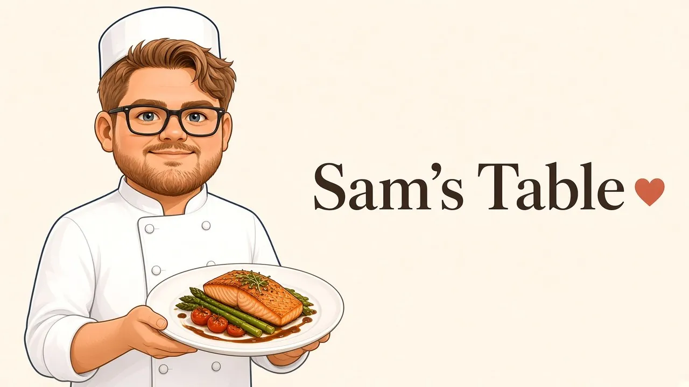

A little about me
Hi, I'm Sam! I'm a culinary student in Las Vegas, and this is where I keep everything I love about food in one place: recipes I've saved, dishes I've made at home and in class, and the restaurants that are worth the trip.
Life gets busy, and it's easy to just stop at a drive-through. But making food doesn't have to be hard or expensive. Cooking at home or meal prepping for the week tastes so much better, and you know exactly what's going into your food. Even on my busiest days, I make time for good food. Food is my love language, and love is my secret ingredient.
I also love to travel, and trying new food is half the reason I go. Closer to home, I've traveled to Mexico, Canada, and Alaska. My adventures have also taken me across Europe, from Stockholm and Visby in Sweden to Helsinki, Kotka, and Hamina in Finland. I've explored the Baltics in Tallinn, Riga, and Klaipeda, plus Gdynia in Poland, Copenhagen in Denmark, and Berlin and Hamburg in Germany. Farther south, I've eaten my way through Zadar and Dubrovnik in Croatia, Corfu, Santorini, Mykonos, and Athens in Greece, Istanbul in Turkey, and Trieste in Italy.
Here you'll find simple, budget-friendly recipes I've actually tested, meal prep ideas, notes from culinary school, and honest, detailed reviews from my travels and closer to home. Every recipe here is one I've tried and collected over the years, from family favorites to YouTube finds, Reddit posts, and dishes from culinary school.
Pull up a chair. There's always room at the table.
Short bio
Sam is a culinary student in Las Vegas who shares home recipes and honest restaurant reviews from around Las Vegas and travels across North America and Europe. Every recipe in my collection has been made at home or in class.
Feel free to quote or reuse this bio.
Work with me
I partner with restaurants, food brands, and local businesses on reviews and tasting invitations, recipe development, food photography, and sponsored posts.